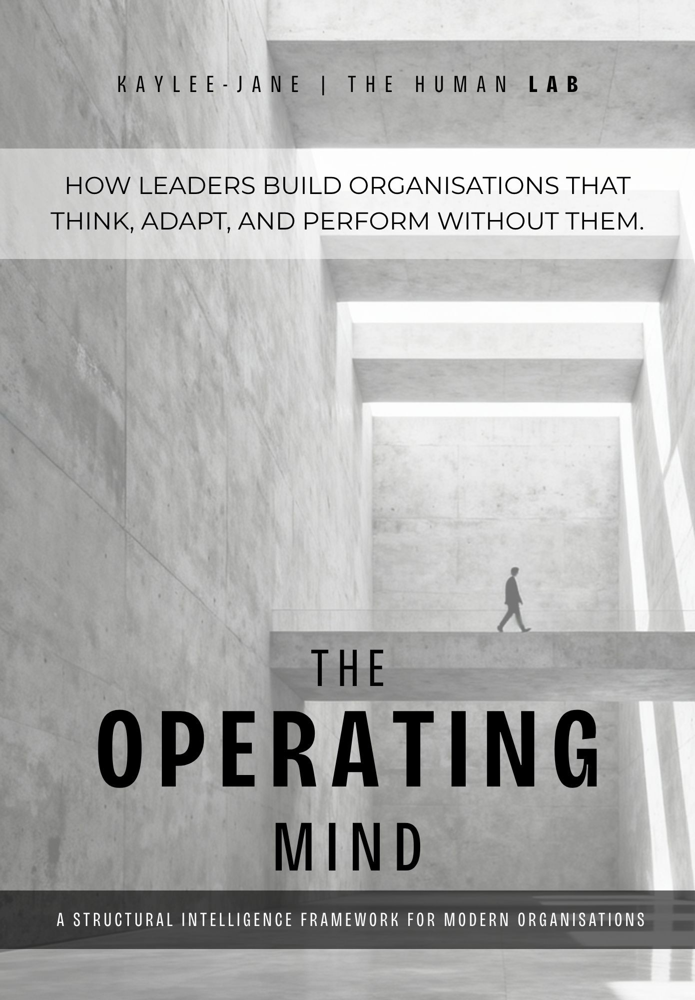
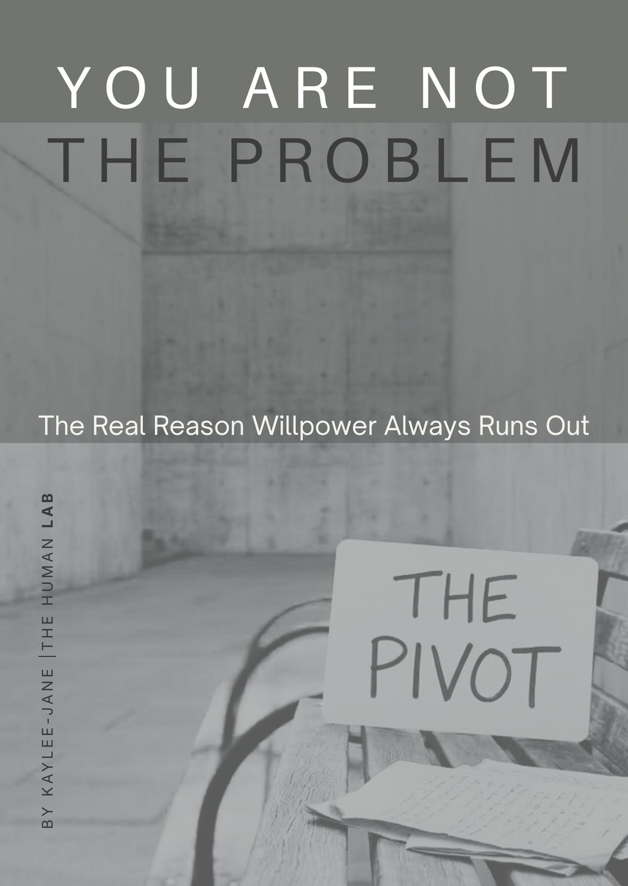
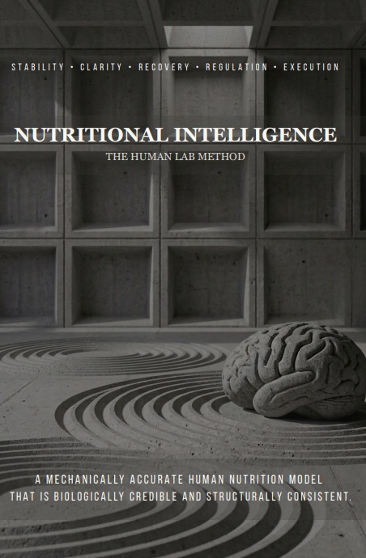
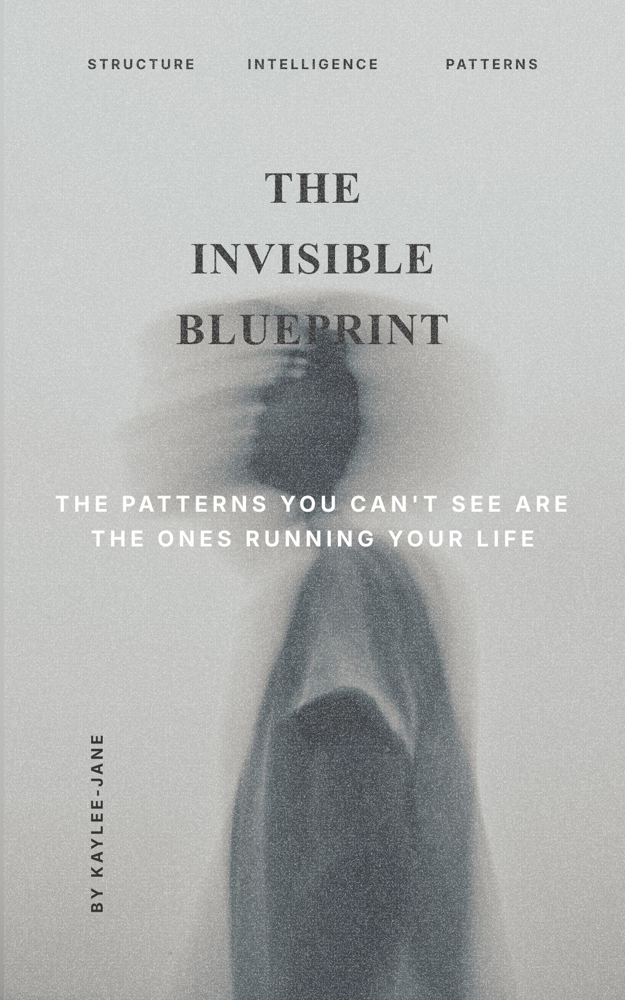

Not motivation. Not coaching.
This is diagnostics.
We map the underlying structure behind how you think, decide, and act.
Your behaviour isn’t random. It’s being produced by a system.
Most people fix the symptoms: Overthinking, Burnout, procrastination, brain fog.
We diagnose the system producing them.
You don’t need more advice.
You need to see how your system is actually working.
I don't quiet dysfunction. I diagnose it.
Human Systems Diagnostician. Built on over a decade mapping patterns across thought, decision, and behaviour.
I don't do coach behaviour.
I diagnose the structure behind it.
THE HUMAN LAB exists to make that structure visible.
Systems Diagnosis of Human Behaviour. Diagnosis before intervention.
A one-to-one diagnostic session where we map:
how your thinking is structured.
how your decisions are made.
why certain patterns keep repeating.
You already sense something isn’t working.
You know what to do — but execution doesn’t hold.
Patterns repeat. Progress stalls.
We map how your thinking, decisions, and state are structured — and why the system isn’t producing consistent output.
This is where structural clarity begins.
Strategy is sound. Intentions are clear. But execution is inconsistent. Something in the system is creating friction
We diagnose: Governance gaps · Decision bottlenecks · Structural misalignment.
This is where structural clarity begins.




Most people try to fix behaviour. We look at the system producing it.
Your patterns are not random. — They are structured.
Your state follows that structure..
Your shift begins when it is mapped.
This is not coaching. This is not wellness.
This is This is systems diagnosis.. Delivered through Structural Intelligence.